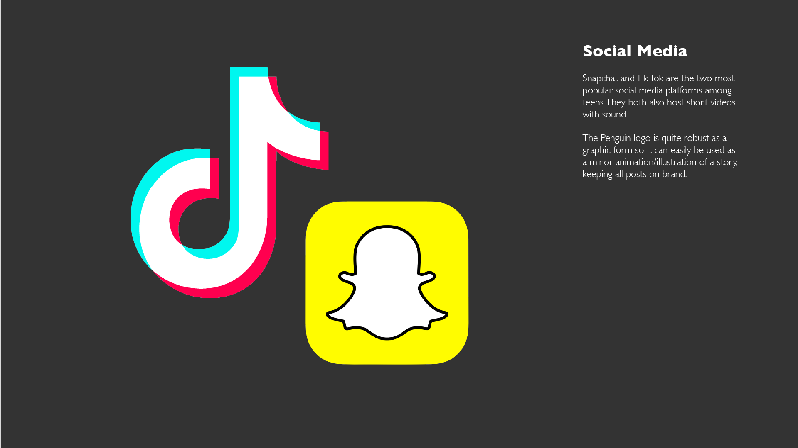
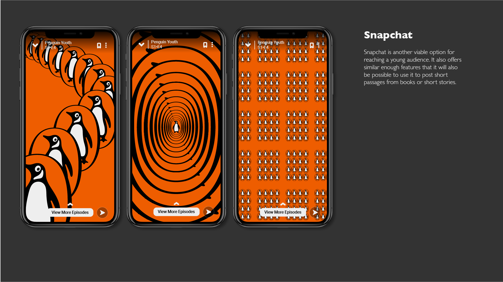
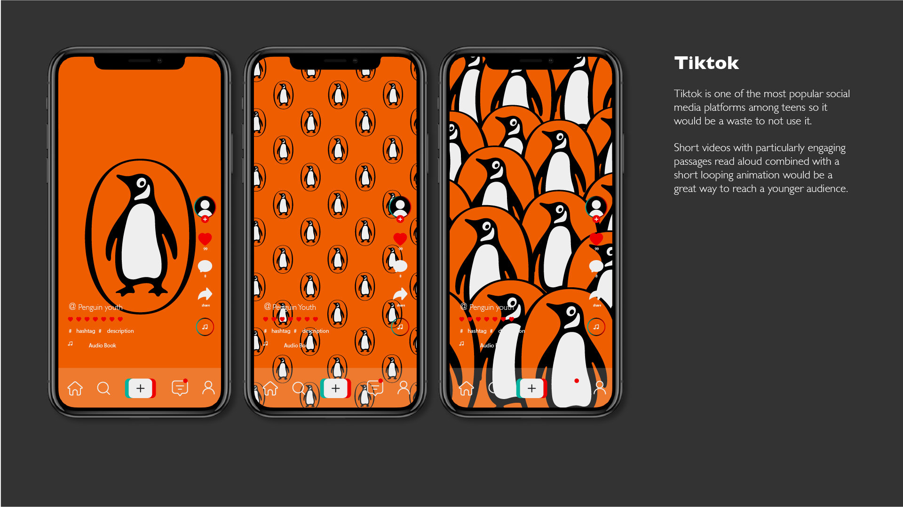

This is my webpage for submission of all projects during my MA in Motion Graphic Design. If you are viewing this but are not affiliated with the university, feel free to browse but please bear in mind that some aspects of this work may not meet the standard I would normally apply to work presented in my professional portfolio. I'm assuming that for the purposes of assessment this submission will be viewed on desktop, so the page may look poorly formatted on mobile devices.
This Page will be divided into three main sections for each module by headings, and further divided into individual projects by sub-headings and a horizontal ruler.
MOTION GRAPHICS
Minor Project
The purpose of this project was to make people think about the role of large corporations that essentially govern our online lives. I take the position that companies like Google and Facebook have too much control over our main source of news and entertainment with little concern for ethics beyond an amiable front. The target audience is actually the employees of Google as there is a good location for outdoor projection onto their building in Dublin and because they are the people who might have some sway over the actions of the company.
Enlivening
The piece I chose to animate is El Lissitzkys' Constructivist "Proun Vraschenia" from his "Proun" series. This is a particularly suitable piece because the artist intended for the piece to be viewed from four different angles. Re-arranging the piece digitally allows the viewer to essentially see the piece from a multitude of perspectives.
Draft video exploring the possibilities for manipulating the elements of the original piece, shown below.
Moving images synced to sound
Self Portrait
My self portrait project was about how the images we post online are evermore fake and performative. I used randomly generated faces as they are of course completely fake, but also because they have slight flaws that give them an air of looking convincing but not quite real, similar to the filters and processing our phones produce.
Previous storyboard shown below, changed after feedback
Kinetic Type
DESIGN SPECIALISM IN AN INTERDISCIPLINARY WORLD
D&AD - Penguin
Rejuvenating and making Penguin Teen more successful should be a multi-faceted change, using social media and and the nostalgic value of the brand to entice youths into reading. A subtle name change from 'Penguin Teen' to 'Penguin Youth' would be effective too, because the former seems a bit condescending, teens are likely to feel like they're being put in a box by reading books designated 'teen' by publishers.
  